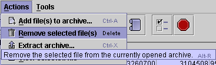
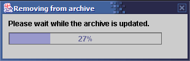

Before you can remove files from an archive, you must open it.
|
1. Select the file you wish to remove from the archive. |
|  | 2. Select "Remove selected file(s)" from the Actions menu. |
|  | 3. The progress bar keeps you informed as the file is removed from the archive. |